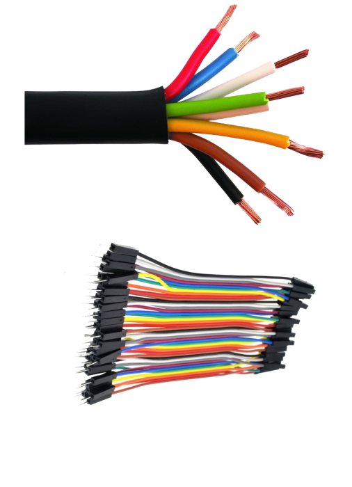
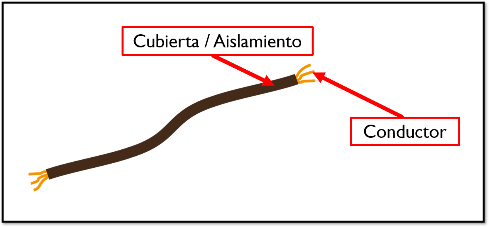
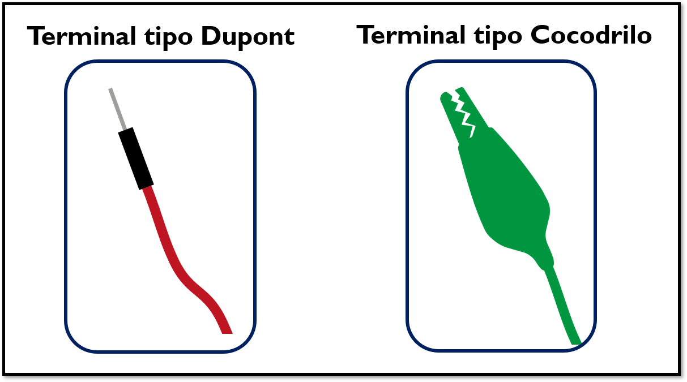
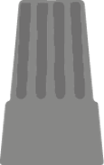
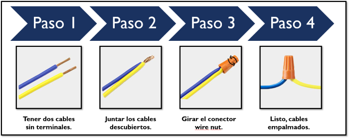
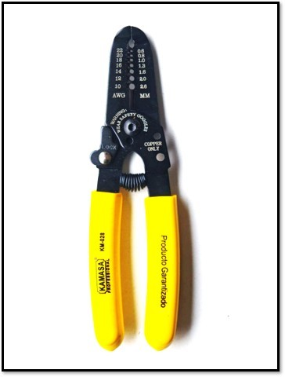

En las siguientes pestañas aprenderemos con un poco de más detalle sobre los conductores eléctricos y, también, sobre el conector wirenut.
Definición
Un conductor eléctrico es un material que permite el paso de la corriente eléctrica. Esto se debe a que los electrones en sus átomos pueden moverse libremente y transportar la carga eléctrica. Los metales, como el cobre, el aluminio y la plata, son ejemplos comunes de conductores eléctricos debido a su estructura atómica que facilita el movimiento de electrones.

Partes
En la siguiente imagen se presenta las partes básicas de un cableado eléctrico:

Terminales eléctricos
Un terminal eléctrico es el punto final de un conductor o cable, diseñado para facilitar la conexión segura y confiable a otros componentes eléctricos o dispositivos. Para nuestros fines veremos dos tipos de terminales y en la siguiente imagen se pueden apreciar:

Conector Wirenut
El wirenut es un conector utilizado para unir o empalmar dos o más cables. Estos conectores están diseñados para asegurar y proteger las conexiones eléctricas, y se utilizan comúnmente en instalaciones residenciales y comerciales.

En la siguiente imagen se presenta el proceso de cómo unir dos cables mediante el conector wirenut:

Herramientas
Normalmente los cables puede ser cortados, quitarles el aislante y colocarles en los extremos unos conectores o terminales. Para esto existen diversas herramientas que ayudarán a que el cable quede en condiciones óptimas para un funcionamiento en específico. Para los objetivos del presente prototipo conoceremos una herramientas que se llama alicate pelacables. Esta herramienta está diseñada para pelar y cortar cables eléctricos de cobre con diferentes calibres (grosor del cable) que van desde 10 AWG.
En la siguiente imagen pueden ver el equipo que necesitarán para cortar y luego pelar los cables.
